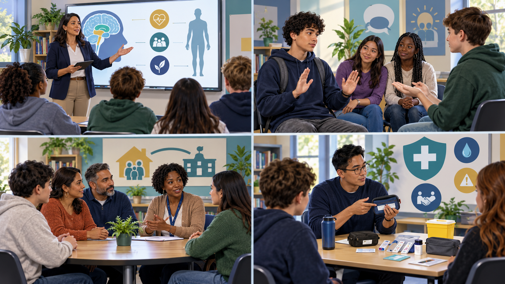
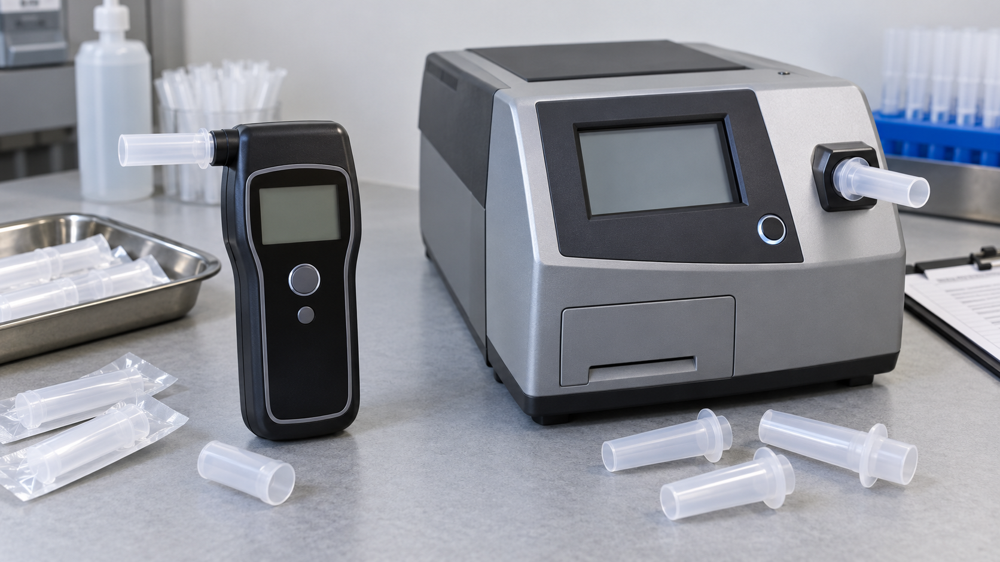
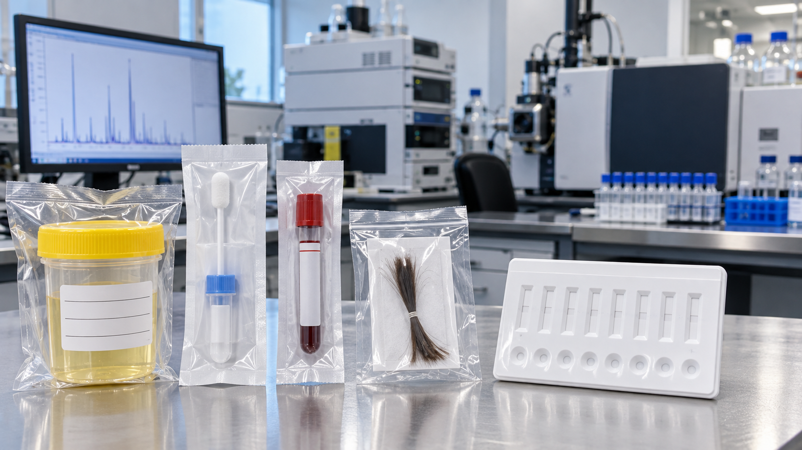

Universal
Age-appropriate education, medication safety, coping, belonging, media literacy, and family communication for an entire school or community.
Effective education is continuous, truthful, developmental, and connected to families, health, relationships, opportunity, and help—not confined to a single slogan or school year.
D.A.R.E.—Drug Abuse Resistance Education—began in Los Angeles in 1983 as a school–police partnership. Uniformed officers taught elementary students about drugs, peer pressure, and refusal. A recognizable brand, ceremonies, political support, and War on Drugs funding helped it spread rapidly.
The law-enforcement setting also created a boundary problem. Children were encouraged to trust officers and to recognize, resist, and sometimes report drug activity. Reporting may be a request for help, but asking children to disclose family behavior to police can turn health education into surveillance. A safe curriculum must explain confidentiality, mandatory safety action, and how to seek care without making children investigate their families.
A memorable brand, visible police participation, simple refusal messages, and public evidence that a school was “doing something.”
The original curriculum could improve short-term knowledge or attitudes, but major reviews did not find meaningful long-term reductions in illicit drug use.
D.A.R.E. later adopted interactive, skills-based material such as keepin’ it REAL. Some findings are more promising, but no brief program can replace sustained education.
Programs are often mixtures. Separating their mechanisms helps us ask what a lesson expects to change: information, personal skills, social pressure, or health risk.

| Model | Main idea | Typical methods | Strength | Risk if used alone |
|---|---|---|---|---|
| Informational | Knowledge will change behavior. | Facts, lectures, media, demonstrations, DUI education, reflection. | Corrects myths and builds health literacy. | Scare tactics destroy credibility; facts alone rarely build skills. |
| Affective / life skills | Coping, communication, decision-making, and connection protect students. | Self-assertion, emotional regulation, problem solving, mentoring, school bonding. | Addresses reasons and protective factors beyond the substance. | May imply individual skills can solve trauma, poverty, unsafe housing, or exclusion. |
| Social influence / resistance | Students can rehearse responses to peer and media pressure. | Modeling, role-play, refusal and exit skills, correcting perceived norms. | Interactive and connected to social learning and inoculation theory. | Can overstate peer pressure and ignore curiosity, coping, family, markets, and mental health. |
| Harm reduction | Prevent use when possible and reduce injury, illness, coercion, and death. | Objective risk, potency and mixing, consent, overdose response, treatment, safer decisions. | Preserves credibility and helps students who do use. | Poorly designed lessons may be too advanced for young children or misread as approval. |
Historical lesson: early programs sometimes mixed accurate information about one substance with false or exaggerated claims about another. Once students discover a deception, the messenger’s credibility—and even the accurate content—may collapse.
Contemporary prevention is not one program for every student. NIDA distinguishes three levels that can operate together.
Age-appropriate education, medication safety, coping, belonging, media literacy, and family communication for an entire school or community.
Extra support for groups facing elevated risk, such as trauma, family disruption, housing instability, or a community overdose surge—without labeling participants as future users.
Confidential screening, counseling, family support, and referral for a person showing early use or related behavior, before consequences escalate.
Education can begin in kindergarten without frightening children or introducing unusable content. Developmental theories point toward concrete safety rules first, growing perspective-taking and social skills in later childhood, and more complex reasoning about risk, identity, law, consent, markets, and health during adolescence. Lessons should repeat and deepen every year rather than disappear just as exposure increases.
| Stage | Developmental task | Age-appropriate education | Adults and institutions |
|---|---|---|---|
| K–Grade 2 | Concrete rules, trusted adults, body safety. | What a drug or medicine is; only take medicine from an authorized caregiver; never share; recognize poison symbols; get help without touching unknown substances. | Families and teachers use the same language; nurses and pharmacists teach safe storage and disposal. |
| Grades 3–5 | Cause and effect, rules, belonging, early media literacy. | Why dose matters; nicotine and alcohol basics; advertising; feelings and coping; how to refuse, leave, and tell a trusted adult. | Parents practice conversations; schools build connection; pediatric care screens family needs. |
| Grades 6–8 | Peer identity, emerging abstract reasoning, rapid social change. | Accurate effects; vaping; prescriptions; peer norms; mental health; consent; early-use pathways; confidential help. | Teachers, counselors, coaches, families, and peers reinforce skills across settings. |
| Grades 9–12 | Independence, future planning, complex risk decisions. | Potency, mixing, counterfeit pills, overdose response, impaired driving, sexual safety, laws, treatment, harm reduction, stigma, and helping a friend. | Health professionals and trained educators teach; schools create referral routes rather than automatic exclusion. |
| College, work, and young adulthood | New autonomy, work roles, relationships, healthcare decisions. | Workplace and athletic policies, safer prescribing, stress, sleep, interactions, recovery resources, bystander skills, and testing rights. | Colleges, employers, unions, healthcare, families, and community services coordinate support. |
Holistic means more than “include parents.” Education should strengthen physical safety, mental and emotional health, social connection, meaning and purpose, and a safe environment. It should connect students to food, housing, counseling, healthcare, recreation, education, and opportunity when those conditions shape risk—just as successful rehabilitation addresses the whole person.
Observation of pupils, behavior, or injection marks is not a laboratory test and cannot reliably identify a substance. Modern testing analyzes breath or a biological specimen. A screen usually flags possible members of a drug class quickly; a confirmation uses a more specific analytical method. A defensible program states its purpose before collecting anything.
Is there present impairment creating immediate risk? Breath alcohol and some oral-fluid or blood tests may relate more closely to recent exposure, but behavior and context still matter.
Was a substance or metabolite present during a detection window? Urine and hair can answer versions of this question but generally do not prove impairment at a particular moment.
Will the result change diagnosis or treatment? Testing should be explained, relevant, interpreted with medication history, and used to support care.
Is access to work, athletics, education, treatment, benefits, or liberty conditioned on a specimen? Accuracy, necessity, privacy, due process, and less intrusive alternatives become central.
Alcohol testing moved from early blood analysis toward breath instruments during the twentieth century. Testing later expanded in criminal-justice monitoring, sports, the military, and workplaces. U.S. arrestee monitoring began with the Drug Use Forecasting program in 1987 and developed into ADAM. Olympic testing expanded from stimulants to anabolic steroids, collegiate testing became systematic in the 1980s, and workplace programs commonly use applicant, random, post-incident, and reasonable-suspicion testing. Different systems serve different purposes and cannot be evaluated by one standard.


| Tool or specimen | Best suited to | Important limitation |
|---|---|---|
| Breath alcohol | Estimating alcohol in breath near testing. | Requires calibration, timing, observation, and procedure; does not measure other drugs. |
| Blood | More direct measurement of a substance or metabolite near collection. | Invasive, time-sensitive, costlier, and not a complete behavioral impairment assessment. |
| Urine | Detecting prior exposure over a drug-dependent window. | Usually cannot show exact time, dose, or impairment during an accident. |
| Oral fluid | Observed collection and generally more recent exposure than urine. | Detection varies by substance, device, cutoff, collection, and confirmation. |
| Hair | Longer-term patterns over weeks or months. | Poor for a precise day or recent event; hair characteristics, cosmetics, contamination, and method matter. |
| Immunoassay screen | Rapidly flagging a possible drug class. | Cross-reactivity can create presumptive positives; high-consequence results need confirmation. |
| Chromatography–mass spectrometry | Specific confirmation and identification. | More time, expertise, and expense; certainty about a chemical does not prove why or how someone behaved. |
Federal workplace rules currently authorize urine and oral fluid under their mandatory guidelines, although other specimens appear in clinical, forensic, athletic, or private settings. Rules vary by institution and jurisdiction.
This activity applies the blood-alcohol-concentration concepts from Section 5. It uses standard drinks, body weight, a simplified body-water distribution model, and time to produce a rough range. Height is not included because height alone does not make this classroom estimate more reliable. Food can slow absorption and change the timing of the peak, but it cannot be converted into one dependable correction factor.
Estimated BAC range
The model uses 14 grams of alcohol per standard drink, common Widmark distribution factors, and a range of alcohol-elimination rates. Real BAC also depends on pour size, alcohol concentration, absorption, medications, health, age, genetics, drinking pace, and when the peak occurs. A mixed drink may contain more than one standard drink. The displayed range is therefore an illustration, not a measurement or prediction for one person.
“Does testing work?” is incomplete until we name the outcome. A program might identify exposure or deter some use yet fail to improve productivity, safety, morale, treatment participation, or health. Costs include collection, laboratory work, confirmation, review, administration, disputes, lost applicants, false results, and consequences imposed on people.
A result is tied to a person. When refusal can cost employment, treatment, schooling, athletics, benefits, or liberty, “consent” occurs under unequal power. Constitutional rules differ between government and private actors, and legal protection depends on context. Ethical analysis should go beyond “is it legal?” to ask whether testing is necessary, proportionate, accurate, private, appealable, and connected to help.
Scenario: A urine screen is positive after a workplace accident.
Choose the more defensible next step.
A complete system resembles holistic rehabilitation: it follows development, responds to the whole person, includes families without making children informants, and connects knowledge to real services. Success is not assemblies delivered; it is learning, delayed initiation, reduced harm, help-seeking, school connection, health, and opportunity over time.